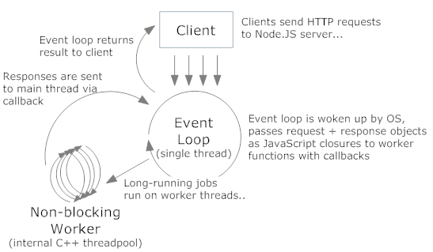

Intro to Node.js

Node.js is not
- ... a language
- ... a web framework
Node.js is
... a platform built on Chrome's JavaScript runtime for easily building fast and scalable network applications.
Who's using it ?

Code snippets
http://bit.ly/isel-workshopInstalling Node.js
Binary Installers
Versions
- Stable: v0.8.16
- Unstable: v0.9.4
Installing Node.js from source
Using git to clone the project
git clone https://github.com/joyent/node.git
cd node
git checkout v0.8.16
./configure && make
sudo make install
Gist #1
Installing Node.js from source
Download and untar or unzip
wget http://nodejs.org/dist/v0.8.16/node-v0.8.16.tar.gz
tar -zxf node-v0.8.16.tar.gz
cd node-v0.8.16
./configure
make
sudo make install
Gist #2
Hello world
var http = require('http');
http.createServer(function (req, res) {
res.writeHead(200, {'Content-Type': 'text/plain'});
res.end('Hello World\n');
}).listen(1337, '127.0.0.1');
console.log('Server running at http://127.0.0.1:1337/');
Gist #3
Node.js approach to concurrency
Concurrency
Several computations executing simultaneously and, potentially, interacting with each other
First basis theory
I/O is expensive
Cost of I/O
| L1-Cache | 3 cycles |
| L2-Cache | 14 cycles |
| RAM | 250 cycles |
| Disk | 41 000 000 cycles |
| Network | 240 000 000 cycles |
Approaches to I/O
- Synchronous
- Processes
- Threads
Second basis theory
Thread-per-connection is memory-expensive
Multi thread vs event based

like nginx, node.js is event based
Node.js approach
- Single threaded execution
- Don't wait for IO
function handleResult(result) {
console.log('I have results: ' + result);
}
database.query('SELECT * from ARTICLES WHERE ID=1', handleResult);
console.log('I have started the query');
Gist #4
Event driven programming
... javascript is ideal
Closures
Access variables outside the current scope
var parcels = [2, 5, 10, 42, 67, 78, 89, 120];
var sum = 0;
function sumParcel(parcel) {
sum += parcel;
}
parcels.forEach(sumParcel);
console.log('sum: ' + sum);
Gist #5
Asynchronous Execution
Iteration example
var i = 0;
while( ++ i <= 4) {
setTimeout(function() {
console.log(i);
}, 100);
}
always prints 5. Why?
Gist #6
Asynchronous Execution
Using a closure
var i = 0;
while( ++ i <= 4) {
(function(i) {
setTimeout(function() {
console.log(i);
}, 100);
}(i));
}
prints 1, 2, 3, 4
Gist #7
Event loop
The reactor pattern
Blocking the event loop
var cycle = true;
var counter = 0;
function firstCallback() {
while(cycle) {
counter ++;
}
}
setTimeout(firstCallback, 100);
function secondCallback() {
cycle = false;
}
setTimeout(secondCallback, 200);
Gist #8
Node.js philosophy
Node.js is minimal
Complexity is userland
Minimal surface area
Expose only the absolute essential
Reuse
A functional API
a = …
a.useLog(console.log);
Summary
- Node addresses I/O with an Evented Model performance